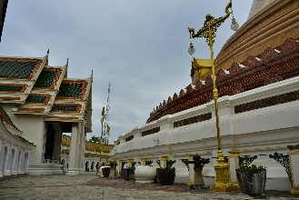

Nakhon Pathom
Capital da província de mesmo nome, que tem como principal atração o maior chedi do mundo.Mas a cidade também é conhecida por sua grande variedade de frutas e pratos típicos, principalmente toranja, tanto que alguns se referem á ela como "cidade da toranja doce".
Antigamente era situada no litoral, vindo a prosperar durante o período Dvaravati. De acordo com descobertas arqueológicas, foi a primeira cidade tailandesa a possuir influências do Budismo e de civilizações indianas.
Pelo Phra Pathom Chedi e de outros vestígios encontrados na cidade, acredita-se que era um centro da civilização na época. Pessoas de diferentes etnias se assentaram na cidade, porém, uma mudança no curso do rio causou uma inundação que obrigou as pessoas a migrarem e se assentarem nas margens do rio. Estas comunidades acabaram virando cidades. Uma dessas novas cidades recebeu o nome de Nakhon Chaisi ou Sirichai, deixando Nakhon Pathom deserta por séculos até o reinado de Rama IV.
Enquanto o rei estava no monastério, viajou para Nakhon Pathom e encontrou o Phra Pathom Chedi que ele considerou ser o maior de todos.
Quando ele chegou ao trono, ordenou a construção de um novo chedi para cobrir o antigo, além da renovação dos arredores, inclusive com a criação de um novo canal para facilitar o percurso diário.
Durante o reinado de Rama V, as construções das ferrovias ao sul começaram, e nessa época Nakhon Pathom ainda era uma área de florestas densas.
O rei ordenou também que a cidade fosse relocada de Tambon Thana, Amphoe Nakhon Chaisi, para a área do Phra Pathom Chedi, como era anteriormente. Desde então Nakhon Pathom está onde está.
Durante o reinado de Rama VI, um palácio foi construído no Tambon Sanam Chan como residência temporária para suas viagens. Com isso, muitas rodovias e ruas foram criadas. Uma grande ponte foi construída sobre o canal construído próximo ao chedi.
Esta ponte foi nomeada Saphan Charoensattha pelo próprio rei. Mais tarde, ele mudou o nome da cidade de Nakhon Chaisi para Nakhon Pathom, mas o nome da prefeitura ainda era Nakhon Chaisi até o reinado de Rama VII. Nakhon Chaisi é agora apenas um distrito administrativo da província.
Em 2000 a cidade tinha uma população de 120.000 habitantes.
Como chegar à Nakhon Pathom
* De ônibus: os ônibus públicos da BKS (linhas 83 e 997) saem de do Southern Bus Terminal de Bangcoc. A passagem custa ฿$ 40 na 1ª classe e leva cerca de 1 hora se o tráfego estiver bom. Os ônibus saem a cada 10 minutos das 4:10 às 21:30. Há também ônibus de 2ª classe para Kanchanaburi, que passam por Nakhon Pathom, e saem a cada 15-30 minutos. Além dessas opções há um microônibus direto que sai do Victory Monument e vai até o Big C Superstore em Nakhon Pathom, mas você pode pedir para descer na frente do Phra Pathom Chedi. Esta é sem dúvida a melhor opção, já que o Victory Monument é bem mais fácil de ser acessado do que a rodoviária ao sul de Bangcoc. Mas atenção pois o ponto de partida do microônibus é meio difícil de ser encontrado. Ele fica abaixo da via expressa, a cerca de 50m ao norte da rotatória, na rua Phahon Yothin. A passagem custa cerca de ฿$ 60.* De trem: 6 linhas diárias saem da estação de Thon Buri em Bangcoc, das 7:30 às 19:30. A passagem para a viagem de 47km e que dura pouco mais de 1h varia de ฿$ 10 à ฿$ 90, de acordo com o serviço e classe do vagão.
As atrações de Nakhon Pathom

Wat Pra Pathom Chedi Ratchavoraviharn (พระปฐมเจดีย์)
Mais conhecido apenas como Pra Pathom Chedi, trata-se de um monastério de 1ª classe onde encontra-se o chedi mais alto do mundo, com
127m de altura e uma circunferância de 234m na base.
O chedi é citado pela primeira vez em escrituras budistas de 675, e evidências arqueológicas indicam que ele tenha sido construído em 539.
Esta construção, a primeira construção religiosa de grande porte na Tailândia é uma das responsáveis pela vinda de muitos budistas ao país.
O chedi original, está em ruínas, dentro do enorme chedi externo, construído no em 1853, durante o reinado de Rama IV.
No Século XI foi construído um prang khmer sobre ele, que mais tarde acabou sendo encoberto pela mata.
Esta ruína era frequentemente visitada pelo rei Mongkut durante sua época de monge. Após sua coroação, ele ordenou a construção de um novo chedi no local. Após 17 anos, a construção foi concluída, em 1870, e a população da cidade vizinha de Nakhon Chai Si recebeu ordens de se mudar para a nova cidade criada ao redor do chedi.
É a mais sagrada construção budista do país, e é tão importante para os locais que se tornou símbolo oficial da província.
Outro destaque do templo é a imagem Phra Rung Rodjanarith Sri-intharathit Thammamopas Mahavachiravuth Rachpuchaniyabopitr (mais conhecida como Phra Ruang Rodjanarith). Ela foi construída durante o reinado de Rama VI, em 1913, com a cabeça, mãos e pés sendo trazidos de Muang Srisatchanalai e Sukhothai.
O chedi é citado pela primeira vez em escrituras budistas de 675, e evidências arqueológicas indicam que ele tenha sido construído em 539.
Esta construção, a primeira construção religiosa de grande porte na Tailândia é uma das responsáveis pela vinda de muitos budistas ao país.
O chedi original, está em ruínas, dentro do enorme chedi externo, construído no em 1853, durante o reinado de Rama IV.
No Século XI foi construído um prang khmer sobre ele, que mais tarde acabou sendo encoberto pela mata.
Esta ruína era frequentemente visitada pelo rei Mongkut durante sua época de monge. Após sua coroação, ele ordenou a construção de um novo chedi no local. Após 17 anos, a construção foi concluída, em 1870, e a população da cidade vizinha de Nakhon Chai Si recebeu ordens de se mudar para a nova cidade criada ao redor do chedi.
É a mais sagrada construção budista do país, e é tão importante para os locais que se tornou símbolo oficial da província.
Outro destaque do templo é a imagem Phra Rung Rodjanarith Sri-intharathit Thammamopas Mahavachiravuth Rachpuchaniyabopitr (mais conhecida como Phra Ruang Rodjanarith). Ela foi construída durante o reinado de Rama VI, em 1913, com a cabeça, mãos e pés sendo trazidos de Muang Srisatchanalai e Sukhothai.

Local: ocupa toda uma quadra, cercada pelas ruas Phet Kasem, Naphra, Sai Pra e Langpra.
Voltar à lista
Wat Sisathong
Famoso templo dedicado à Phra Rahu (พระราหู), ou Deus da Escuridão. Os adoradores oferecem à Rahu 8 oferendas pretas: galinha preta, geléia preta, bebida alcoólica
preta, arroz preto e pudim preto.
Em 1997, Khunying Phankrua Yongchaiyudh, mulher do então primeiro ministro Chavalit Yongchaiyudh, buscou a ajuda de Phra Rahu para manter a coalizão do seu marido no governo, o que aconteceu.
Buscar a benção de Phra Rahu para evitar má sorte é uma prática comum entre os adeptos, e este templo é o mais popular dentre os dedicados à este deus, com uma imagem que dizem ser a maior dessa divindade na Tailândia.
Em 1997, Khunying Phankrua Yongchaiyudh, mulher do então primeiro ministro Chavalit Yongchaiyudh, buscou a ajuda de Phra Rahu para manter a coalizão do seu marido no governo, o que aconteceu.
Buscar a benção de Phra Rahu para evitar má sorte é uma prática comum entre os adeptos, e este templo é o mais popular dentre os dedicados à este deus, com uma imagem que dizem ser a maior dessa divindade na Tailândia.
Palácio Sanam Chan
Antiga residência do rei Rama VI.
Bem na frente do palácio há um monumento em homenagem à Yah Leh, seu amado cão.
Vale a pena também uma caminhada no campus da Universidade Silpakorn, que fica anexa ao palácio. Todas as Quartas há um mercado de estudantes vendendo camisas e a cafeteria próxima ao lago oferece uma excelente comida tailandesa à preços baixos.
Bem na frente do palácio há um monumento em homenagem à Yah Leh, seu amado cão.
Vale a pena também uma caminhada no campus da Universidade Silpakorn, que fica anexa ao palácio. Todas as Quartas há um mercado de estudantes vendendo camisas e a cafeteria próxima ao lago oferece uma excelente comida tailandesa à preços baixos.
Residência Vacharee Rommaya
Residência de 2 andares com um desenho bastante influenciado pela arquitetura europeia.
Destaque para o salão do trono em estilo tailandês chamado Samakkeemukamartaya. O frontão norte é moldado no desenho do deus Indra sob um castelo de 3 cones. Na sua mão direita há uma arma, um trovão. Ao redor dele há anjos e 5 tipos de humanos. Devido sua capacidade para várias pessoas, esse salão já serviu de salão de banquetes, salão do trono para audiências com o rei, sala de conferência para o Wild Tigers Corps (força paramilitar), e um teatro para apresentações de Khon (teatro tradicional tailandês).
Os locais muitas vezes se referem ao salão como Casa do Khon.
Destaque para o salão do trono em estilo tailandês chamado Samakkeemukamartaya. O frontão norte é moldado no desenho do deus Indra sob um castelo de 3 cones. Na sua mão direita há uma arma, um trovão. Ao redor dele há anjos e 5 tipos de humanos. Devido sua capacidade para várias pessoas, esse salão já serviu de salão de banquetes, salão do trono para audiências com o rei, sala de conferência para o Wild Tigers Corps (força paramilitar), e um teatro para apresentações de Khon (teatro tradicional tailandês).
Os locais muitas vezes se referem ao salão como Casa do Khon.
Museu Nacional Phra Pathom Chedi
Museu criado durante o reinado de Rama V, pelo príncipe Damrongrajanupab, para coletar artefatos encontrados na área da cidade.
Em 1934 o museu passou a ser responsabilidade do Departamento de Belas Artes.
Em 1967 se mudou do templo para seu local atual.
Atualmente exibe evidências da História da cidade, em uma exibição dividida em 3 partes: uma apresentando uma introdução da cidade dos tempos pré históricos ao período Dvaravati, outra apresentando a arte do período Dvaravati e outra apresentando o período Rattanakosin na cidade até os dias atuais.
Em 1934 o museu passou a ser responsabilidade do Departamento de Belas Artes.
Em 1967 se mudou do templo para seu local atual.
Atualmente exibe evidências da História da cidade, em uma exibição dividida em 3 partes: uma apresentando uma introdução da cidade dos tempos pré históricos ao período Dvaravati, outra apresentando a arte do período Dvaravati e outra apresentando o período Rattanakosin na cidade até os dias atuais.
Horário: de Quarta à Domingo das 9:00 às 16:00. Fechado às Segundas, Terças e feriados nacionais.
Local: rua Khwa Pra.
Entrada: ฿$ 50.
Fone: 034-242500.
Voltar à lista
Local: rua Khwa Pra.
Entrada: ฿$ 50.
Fone: 034-242500.
Wat Songtham Kanlayanee (วัดทรงธรรมกัลยาณี)
Templo e monastério fundado em 1960 por Ta Tao Fa Tzu (nascida Voramai Kabilsingh). O nome do templo se traduz para algo como "templo das mulheres que apoiam
Dharma". A abadessa do templo é Dhammananda (nascida Chatsumarn Kabilsingh), filha da fundadora Ta Tao Fa Tzu. Ela foi a primeira tailandesa a receber ordenação
total como uma freira Theravada.